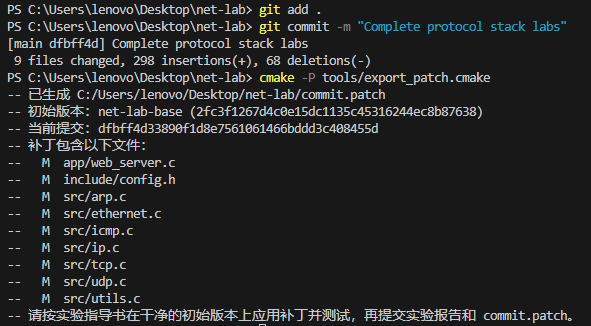

协议栈实验提交与自检
协议栈编程实验采用统一提交方式：完成 Lab9 后，提交一份实验报告和一份 commit.patch。即使没有完成全部协议栈实验，也可以提交；完成多少就提交多少，并在实验报告中如实说明完成情况。此前的协议栈实验不单独提交，实验过程中仍需按各章要求完成测试，并保存运行结果和抓包分析。
本章的提交要求适用于协议栈编程实验，配置实验和附加题按各自章节要求执行。
1. 协议栈提交内容
实验报告：覆盖 Eth、ARP、IP、ICMP、UDP、TCP、HTTP 七个协议的实验设计、运行结果及分析。
代码补丁
commit.patch：包含相对课程初始版本net-lab-base的全部协议栈实现，教师将使用该补丁还原代码并重新编译测试。
上传这两项材料即可，无需提交整个工程目录。git commit 用于在本地保存代码版本，课程平台上的统一提交则是在 Lab9 完成后上传报告和补丁，两者是不同的操作。
2. 协议栈实验报告要求
报告应结合自己完成的实现和测试，包含以下内容：
实验 PPT、实验报告和工具下载链接（校内网）：点击此处下载。
设计思路：按协议说明主要数据结构、处理流程和关键实现，解释协议之间如何协作。
测试结果：记录组件测试结果，以及 UDP、TCP 和 HTTP 的集成测试现象，包括数据收发、网页访问和错误页面等。
抓包分析：结合自己的 Wireshark 抓包，分析报文封装、ARP 解析、TCP 连接建立与关闭、HTTP 请求与响应等过程。
问题与解决方法：说明调试中遇到的主要问题、定位依据和解决过程，并记录补丁还原后的自检结果。
报告会纳入评分。请用自己的分析说明实现是否符合预期，避免只粘贴代码或指导书截图。
3. 提交前的代码准备
请使用 git clone 获取的课程仓库完成实验。
不要修改课程测试程序、测试数据或 include/config.h 中 #ifdef TEST 分支的固定参数。每次修改实现后都应重新提交并导出补丁；自检期间如需修改实现，请先返回 main 分支，完成提交和补丁导出后再重新自检。
以下步骤每一步报错都应先停止并处理。导出失败时可能仍保留旧的 commit.patch，应确认工具明确提示成功后再使用补丁。
4. 分平台提交与自检
请先判断 实际运行实验命令的终端环境 ，再选择下方对应标签。按同一平台的步骤完成测试、生成 commit.patch 和补丁还原自检，不要混用 Windows 与 Linux 命令。
本页适用于 Windows + PowerShell 环境。请先完成 Windows开发环境搭建 中的 Git、CMake 3.13 或更新版本、MinGW / TDM-GCC 和 Npcap 配置。以下命令均在 net-lab 项目根目录执行。
1. Windows 环境下完成全部实验测试
在项目根目录配置、编译并运行全部组件测试：
注意
以下命令必须在 net-lab 项目根目录执行，不能在 net-lab\build 目录执行。运行命令前可先执行 Test-Path .\CMakeLists.txt，输出 True 才表示当前目录正确。如果 PowerShell 提示符以 \net-lab\build> 结尾，请先执行 cd .. 返回项目根目录。
cmake -S . -B build -G "MinGW Makefiles" -DCMAKE_C_COMPILER=gcc -DCMAKE_CXX_COMPILER=g++
cmake --build build --target eth_in eth_out arp_test ip_test ip_frag_test icmp_test udp_test tcp_test
cmake -E chdir build ctest --output-on-failure
最后一条命令会在 build 目录中运行 CTest，输出中应实际列出 8 项测试，并以 100% tests passed 结束。若显示 No tests were found，说明测试没有运行，不能视为通过。
组件测试使用固定的测试地址，无需以管理员权限运行。以上命令仅编译组件测试目标；UDP、TCP 和 HTTP 的集成测试请按 Lab7（UDP） 和 Lab9（TCP 与 HTTP） 中的方法完成。Lab9 完成后的统一提交要求全部组件测试和上述集成测试通过。
2. Windows 环境下保存实现并生成补丁
如果首次执行 git commit 提示缺少姓名或邮箱，请在项目根目录配置当前仓库后再提交：
git config user.name "你的姓名"
git config user.email "你的邮箱"
请确认当前位于保存自己实现的开发分支，并且课程初始标签 net-lab-base 可用。使用课程仓库 git clone 获取代码时，该标签会自动获取。
确认只包含必要的实验文件后，保存实现并导出补丁：
git add .
git commit -m "Complete protocol stack labs"
cmake -P tools/export_patch.cmake
执行成功后，项目根目录会生成 commit.patch，包含 Eth 到 HTTP 的全部已提交修改。后续修改实现时，需要重新提交并导出补丁。


3. Windows 环境下在干净初始代码上还原自检
这一步检查的是：老师能否仅靠你提交的 commit.patch，在课程初始版本 net-lab-base 上还原代码，并重新编译、运行测试。
3.1 Windows：备份补丁并切换到初始版本
将补丁复制到项目外备份，并检查工作区状态：
Copy-Item .\commit.patch ..\net-lab-commit.patch
git status --short
如果有需要纳入实验的未提交修改，请先提交并重新导出、备份补丁。若只是其他需要暂时保留的额外改动，可执行：
git stash push -u -m "before patch check"
这些额外改动不会进入已经生成的补丁。确认 git status --short 没有输出后，再切换到课程初始版本：
git switch --detach net-lab-base
此时进入“分离 HEAD”状态，工作区恢复为课程初始代码。这是补丁自检的正常步骤，后续还会返回开发分支。
3.2 Windows：应用补丁还原实现
复制回备份的补丁，先检查能否应用，再正式应用：
Copy-Item ..\net-lab-commit.patch .\commit.patch
git apply --check commit.patch
git apply commit.patch
两条 Git 命令均无报错，说明补丁能够应用到课程初始代码。若报错，请核对初始标签及补丁是否正确，返回开发分支处理后重新导出。
3.3 Windows：重新编译并验证还原结果
在独立的 build/patch-check 目录重新配置、编译并运行全部组件测试：
cmake -S . -B build/patch-check -G "MinGW Makefiles" -DCMAKE_C_COMPILER=gcc -DCMAKE_CXX_COMPILER=g++
cmake --build build/patch-check --clean-first --target eth_in eth_out arp_test ip_test ip_frag_test icmp_test udp_test tcp_test
cmake -E chdir build/patch-check ctest --output-on-failure
--clean-first 会清理该目录的旧编译结果，确保运行的是刚还原的源码。输出中必须实际执行 8 项组件测试且全部通过；No tests were found 不表示通过。
以上命令仅编译组件测试目标；UDP、TCP 和 HTTP 的集成测试请按 Lab7（UDP） 和 Lab9（TCP 与 HTTP） 中的方法完成。
3.4 Windows：返回开发分支
测试结束后返回开发分支，下文以 main 为例：
git checkout -f main
这会丢弃自检期间的未提交修改，并恢复 main 中已提交的实验实现。执行前请备份自检期间需要保留的新修改。
如果 3.1 节执行过 git stash，返回开发分支后再恢复暂存的改动：
git stash pop
若恢复的改动属于最终实现，请重新提交、导出补丁并自检。commit.patch 已被 Git 忽略，无需再对补丁执行 git add 或 git commit。
本页适用于 Linux 物理机、Linux 虚拟机和 WSL2。请先按照 附录 B：网络编程实验环境 配置 Git、CMake 3.13 或更新版本、GCC / G++、Make 和 libpcap 开发库。以下命令均在 net-lab 项目根目录执行。
1. Linux 环境下完成全部实验测试
在项目根目录配置、编译并运行全部组件测试：
cmake -S . -B build
cmake --build build --target eth_in eth_out arp_test ip_test ip_frag_test icmp_test udp_test tcp_test
cmake -E chdir build ctest --output-on-failure
最后一条命令会在 build 目录中运行 CTest，输出中应实际列出 8 项测试，并以 100% tests passed 结束。若显示 No tests were found，说明测试没有运行，不能视为通过。
组件测试使用固定的测试地址，无需配置 veth 或以管理员权限运行。以上命令仅编译组件测试目标；UDP、TCP 和 HTTP 的集成测试请按 Lab7（UDP） 和 Lab9（TCP 与 HTTP） 中的方法完成。Lab9 完成后的统一提交要求全部组件测试和上述集成测试通过。
2. Linux 环境下保存实现并生成补丁
如果首次执行 git commit 提示缺少姓名或邮箱，请在项目根目录配置当前仓库后再提交：
git config user.name "你的姓名"
git config user.email "你的邮箱"
请确认当前位于保存自己实现的开发分支，并且课程初始标签 net-lab-base 可用。使用课程仓库 git clone 获取代码时，该标签会自动获取。
确认只包含必要的实验文件后，保存实现并导出补丁：
git add .
git commit -m "Complete protocol stack labs"
make diff
若实现已经全部提交，可跳过 git add 和 git commit，直接执行 make diff。执行成功后，项目根目录会生成 commit.patch，包含 Eth 到 HTTP 的全部已提交修改。后续修改实现时，需要重新提交并导出补丁。
3. Linux 环境下在干净初始代码上还原自检
这一步检查的是：老师能否仅靠你提交的 commit.patch，在课程初始版本 net-lab-base 上还原代码，并重新编译、运行测试。
3.1 Linux：备份补丁并切换到初始版本
将补丁复制到项目外备份，并检查工作区状态：
cp commit.patch ../net-lab-commit.patch
git status --short
如果有需要纳入实验的未提交修改，请先提交并重新导出、备份补丁。若只是其他需要暂时保留的额外改动，可执行：
git stash push -u -m "before patch check"
这些额外改动不会进入已经生成的补丁。确认 git status --short 没有输出后，再切换到课程初始版本：
git switch --detach net-lab-base
此时进入“分离 HEAD”状态，工作区恢复为课程初始代码。这是补丁自检的正常步骤，后续还会返回开发分支。
3.2 Linux：应用补丁还原实现
复制回备份的补丁，先检查能否应用，再正式应用：
cp ../net-lab-commit.patch commit.patch
git apply --check commit.patch
git apply commit.patch
两条 Git 命令均无报错，说明补丁能够应用到课程初始代码。若报错，请核对初始标签及补丁是否正确，返回开发分支处理后重新导出。
3.3 Linux：重新编译并验证还原结果
在独立的 build/patch-check 目录重新配置、编译并运行全部组件测试：
cmake -S . -B build/patch-check
cmake --build build/patch-check --clean-first --target eth_in eth_out arp_test ip_test ip_frag_test icmp_test udp_test tcp_test
cmake -E chdir build/patch-check ctest --output-on-failure
--clean-first 会清理该目录的旧编译结果，确保运行的是刚还原的源码。输出中必须实际执行 8 项组件测试且全部通过；No tests were found 不表示通过。
以上命令仅编译组件测试目标；UDP、TCP 和 HTTP 的集成测试请按 Lab7（UDP） 和 Lab9（TCP 与 HTTP） 中的方法完成。
3.4 Linux：返回开发分支
测试结束后返回开发分支，下文以 main 为例：
git checkout -f main
这会丢弃自检期间的未提交修改，并恢复 main 中已提交的实验实现。执行前请备份自检期间需要保留的新修改。
如果 3.1 节执行过 git stash，返回开发分支后再恢复暂存的改动：
git stash pop
若恢复的改动属于最终实现，请重新提交、导出补丁并自检。commit.patch 已被 Git 忽略，无需再对补丁执行 git add 或 git commit。
5. 协议栈最终提交检查
上传前请确认：
实验报告覆盖七个协议，包含自己的运行结果、抓包分析和补丁还原自检结果。
commit.patch是从最新的已提交实现导出的，能够应用到net-lab-base。还原后重新编译的全部组件测试通过，UDP、TCP 和 HTTP 集成测试也已完成并通过。
补丁仅包含必要的实验修改，未修改课程测试程序、测试数据或固定测试参数。
完成上述检查后，按课程规定的渠道和截止时间，统一上传实验报告和 commit.patch。编译缓存、可执行文件、个人 .vscode 配置和整个工程目录均无需上传。